Week 3 SQL to R
This unit spans Mon, Jan 20, 2020 through Sat, Jan 25, 2020.
At 11:59 PM on Sat, Jan 25, 2020 the following items are due:
- Introduction to the Tidyverse
Please do not start the assigned datacamp tutorials until class on Tuesday January 21 so that you have a good foundation to attempt the tutorial assignment.
Now that we’ve learnt SQL and communication with RDBMS, we will cover how we extract data from SQL into R environment. We will learn some fundamental building blocks of R in the classroom.
Besides it is time to introduce some packages as well which will make our life easier when manipulating and exploring data. We’ll also use external packages to visually explore our data (i.e., create simple visualizations).
3.1 Media
3.1.1 Suggested Readings
- For Big-Data Scientists, ‘Janitor Work’ Is Key Hurdle to Insights
- Markdown
- R-FAQ 2.10 - What is CRAN?
- R Packages: A Beginner’s Guide
- What is the tidyverse?, by Joseph Rickert{target=’_blank}
3.1.2 Videos
- Video: Installing SQL Workbench
- Video: Connect to SQL from Workbench
- Video: SQL 2 CSV
- Video: CSV to SQL
- Video: SQL 2 R
3.1.3 Data for SQL Exercise
3.2 Data Management
The NY Times article describes what they aptly termed “janitorial” work as data wrangling. The other often used term is data munging and it always involves getting data from some raw format into something more usable. How much work this requires depends on a few factors including the completeness, correctness, structure and source/type of data.
Completeness and correctness are what they sound like. Is there missing data, and is the data that we have correct? Assuming we have some missing data, we have a couple of options – we can discard the missing data, or impute (i.e., guess) what the missing values might be. We usually want to find out if our data is complete and correct before we start doing any analysis on it. The process of correcting data is often referred to as data cleansing or scrubbing.
Structure is a little more abstract concept. Highly structured data is usually the easiest to work with. It is often what we see in a relational database where we have fields like start_date, last_name, hourly_wage that can only store acceptable values. Items you find in a spreadsheet are also highly structured, albeit typically less structured than a relational database.
Unstructured data are pretty much the opposite but data isn’t usually completely unstructured. Most of what we consider to be unstructured data could be classified as semi-structured.
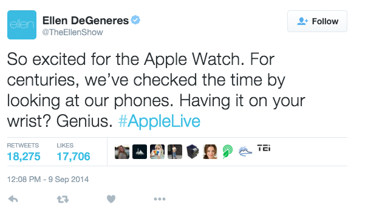
If we examine the tweet above, there are some very structured data. @TheEllenShow is the account name, #AppleLive is a categorical label we can place on a tweet called a hashtag. The time, date, count of retweets and likes are also examples of structured data. The actual text of the tweet is where we have significantly less structure. It is also the hardest for machines to interpret or imply meaning. Product companies often analyze tweets as a way of viewing trends in product sentiment. At first glance “so excited” seems like a very positive comment. As a human, we don’t have to work too hard to figure out this tweet is sarcastic and isn’t definitively reflecting a positive sentiment.
The source/type of data often acts as a rough indicator of how much data wrangling we are going to need to do. For example, if I was starting an analytics project and you told me all of the data came from an internal corporate reporting database, I would be at least somewhat confident that the amount of preparation for analysis wouldn’t be overwhelming. If you said, however, that the data came from a bunch of legal briefs (as pdf files) and phone calls (as audio files), my expectations of preparation time would change dramatically. In this course, we will be mostly working with and cleaning structured data but exposing you to the process and concept of tidying data, which applies to both structured and unstructured data.
All analytics projects have an associated workflow with them. The tools we will be using in this class support the tidy workflow described in R for Data Science and shown below.

While this course will cover all stages of the workflow, we will be spending considerable amounts of time: importing data from a variety of sources; tidying our data to a consistent format; transforming the data to conform with what we want to analyze and; communicating results. Your first assignment, due at the end of this unit, has you focusing on communications by publishing a simple report about yourself. Before we get to explore any of these stages, we need to learn a commonly used tool for analytics, namely R.
## The tidyverse
The tidyverse is a set of external R packages that work together and support the analytics workflow we introduced in the first unit. It was originally casually referred to as the “hadleyverse” as the lead developer on all the initial packages was Hadley Wickham, but he preferred to refer to these packages as the tidyverse explicitly. There are many packages in the tidyverse, but for this unit, we will be covering two of the packages that are automatically loaded when you issue the command library(tidyverse), namely dplyr for data manipulation and ggplot2 for visualization. If you like to follow along with RStudio while you read these notes, make sure you install the tidyverse package (RStudio –> Tools –> Install Package –> tidyverse) and load the library.
Before we get started with dplyr, it is important to mention that all of the tidyverse package support the pipe operator %>% which is used to chain together statements and is technically part of the tidyverse package magrittr. We’ll start out this unit by loading the core packages in the tidyverse.
3.3 dplyr
dplyr is a grammar for data manipulation that uses specific verbs to manipulate data.
it is often difficult to get used to asking questions in dplyr instead of plain English. One way to help improve your thought process is to understand the verbs of dplyr and their purpose.
selectchooses specific columns.renamerenames specific columns and selects all.filterchooses specific rows.arrangesorts rows.mutatecreates new columns.transmuteis likemutatebut doesn’t keep your old columns.distinctreturns unique rows.summarizeaggregates or chunks.sliceselects rows by position.sampletakes samples of data (seldom used).
We won’t be discussing sample as it is more commonly used in the sciences, but the other verbs are all commonly used. The other two key non-verb actions in dplyr are group_by, which is typically applied when using summarize and the pipe operator %>% which is used to combine verbs. I give a better visual representation of the queries below in the video, but let’s start by reading in a comma separated values (csv) file from a url and having a quick look at it. Note: we will learn all about importing different filetypes later in the semester.
## lastname firstname major year gpa
## 1 Snow John Nordic Studies Junior 3.23
## 2 Lannister Tyrion Communications Sophomore 3.83
## 3 Targaryen Daenerys Zoology Freshman 3.36
## 4 Bolton Ramsay Phys Ed Freshman 2.24
## 5 Stark Eddard History Senior 2.78
## 6 Clegane Gregor Phys Ed Sophomore 3.23
## 7 Baelish Peter Communications Freshman 2.84
## 8 Baratheon Joffrey History Freshman 1.87
## 9 Drogo Khal Zoology Senior 3.38
## 10 Tarly Samwise Nordic Studies Freshman 2.39got.csv is read into the data frame got using read.csv. We’ll use the pipe operator %>% to pipe the data frame the select verb to choose specific columns (e.g., lastname, firstname, gpa). Within select, I can also change column names. Please note: I am not storing the results of these queries in any variables…I am sending them directly out to output (i.e., printing them out). Below, we are explicitly saying “take the data frame got and select the columns lastname, firstname, and gpa and while you are at it, rename the lastname column to surname.”
## surname firstname gpa
## 1 Snow John 3.23
## 2 Lannister Tyrion 3.83
## 3 Targaryen Daenerys 3.36
## 4 Bolton Ramsay 2.24
## 5 Stark Eddard 2.78
## 6 Clegane Gregor 3.23
## 7 Baelish Peter 2.84
## 8 Baratheon Joffrey 1.87
## 9 Drogo Khal 3.38
## 10 Tarly Samwise 2.39We can use rename to change column names…it selects all the columns in the data frame. So if I wanted to show the entire data frame using the more formal surname instead of lastname, I could do the following without having to specify all of the names in select.
## surname firstname major year gpa
## 1 Snow John Nordic Studies Junior 3.23
## 2 Lannister Tyrion Communications Sophomore 3.83
## 3 Targaryen Daenerys Zoology Freshman 3.36
## 4 Bolton Ramsay Phys Ed Freshman 2.24
## 5 Stark Eddard History Senior 2.78
## 6 Clegane Gregor Phys Ed Sophomore 3.23
## 7 Baelish Peter Communications Freshman 2.84
## 8 Baratheon Joffrey History Freshman 1.87
## 9 Drogo Khal Zoology Senior 3.38
## 10 Tarly Samwise Nordic Studies Freshman 2.39If I wanted to filter the results above to show gpa’s that are greater than or equal to 3.5, I would pipe the results to filter to choose those specific rows.
## surname firstname major year gpa
## 1 Lannister Tyrion Communications Sophomore 3.83If instead, I just wanted to sort the selected columns from highest to lowest gpa, I would use arrange. I use desc because the default sort order is lowest to highest.
## surname firstname major year gpa
## 1 Lannister Tyrion Communications Sophomore 3.83
## 2 Drogo Khal Zoology Senior 3.38
## 3 Targaryen Daenerys Zoology Freshman 3.36
## 4 Snow John Nordic Studies Junior 3.23
## 5 Clegane Gregor Phys Ed Sophomore 3.23
## 6 Baelish Peter Communications Freshman 2.84
## 7 Stark Eddard History Senior 2.78
## 8 Tarly Samwise Nordic Studies Freshman 2.39
## 9 Bolton Ramsay Phys Ed Freshman 2.24
## 10 Baratheon Joffrey History Freshman 1.87Suppose I wanted to create a dean’s list column called dlist and set it to TRUE if the gpa >= 3.5 and FALSE otherwise. I would use mutate for that. Note: in this example, the column is only created in the output, and the data frame is unaltered.
## surname firstname major year gpa dlist
## 1 Snow John Nordic Studies Junior 3.23 FALSE
## 2 Lannister Tyrion Communications Sophomore 3.83 TRUE
## 3 Targaryen Daenerys Zoology Freshman 3.36 FALSE
## 4 Bolton Ramsay Phys Ed Freshman 2.24 FALSE
## 5 Stark Eddard History Senior 2.78 FALSE
## 6 Clegane Gregor Phys Ed Sophomore 3.23 FALSE
## 7 Baelish Peter Communications Freshman 2.84 FALSE
## 8 Baratheon Joffrey History Freshman 1.87 FALSE
## 9 Drogo Khal Zoology Senior 3.38 FALSE
## 10 Tarly Samwise Nordic Studies Freshman 2.39 FALSEIf I just wanted to show my transformed variables and no other variables, I could use transmute
## name dlist
## 1 John Snow FALSE
## 2 Tyrion Lannister TRUE
## 3 Daenerys Targaryen FALSE
## 4 Ramsay Bolton FALSE
## 5 Eddard Stark FALSE
## 6 Gregor Clegane FALSE
## 7 Peter Baelish FALSE
## 8 Joffrey Baratheon FALSE
## 9 Khal Drogo FALSE
## 10 Samwise Tarly FALSEIf we wanted to list the majors represented in the got data frame, we would use distinct, which restricts to unique(distinct) output.
## major
## 1 Nordic Studies
## 2 Communications
## 3 Zoology
## 4 Phys Ed
## 5 HistoryAggregation often adds the most complexity to a query, and it is quite common to see summarize combined with group_by. For example, if we wanted to show the average gpa for each major, we would use group_by to declare that we are doing a calculation for each major and use summarize to define the mean calculation. You’ll notice that instead of a data frame, we are outputting a tibble, which is essentially an enhanced data frame that can store more complex data.
## # A tibble: 5 x 2
## major average_gpa
## <chr> <dbl>
## 1 Communications 3.34
## 2 History 2.33
## 3 Nordic Studies 2.81
## 4 Phys Ed 2.74
## 5 Zoology 3.37Suppose we wanted to show the name of the student with the highest gpa for each major. We could do this in a few different ways. In all cases, since we are doing it for each major, we will be using group_by(major). In the first case, after grouping, we sort in descending gpa order and slice out the first(1) instance of each student.
## # A tibble: 5 x 5
## # Groups: major [5]
## lastname firstname major year gpa
## <chr> <chr> <chr> <chr> <dbl>
## 1 Lannister Tyrion Communications Sophomore 3.83
## 2 Stark Eddard History Senior 2.78
## 3 Snow John Nordic Studies Junior 3.23
## 4 Clegane Gregor Phys Ed Sophomore 3.23
## 5 Drogo Khal Zoology Senior 3.38In the second case, we decide we want to use the top_n function.
## Selecting by gpa## # A tibble: 5 x 5
## # Groups: major [5]
## lastname firstname major year gpa
## <chr> <chr> <chr> <chr> <dbl>
## 1 Lannister Tyrion Communications Sophomore 3.83
## 2 Drogo Khal Zoology Senior 3.38
## 3 Snow John Nordic Studies Junior 3.23
## 4 Clegane Gregor Phys Ed Sophomore 3.23
## 5 Stark Eddard History Senior 2.78In the third case, we use the min_rank function within filter.
## # A tibble: 5 x 5
## # Groups: major [5]
## lastname firstname major year gpa
## <chr> <chr> <chr> <chr> <dbl>
## 1 Snow John Nordic Studies Junior 3.23
## 2 Lannister Tyrion Communications Sophomore 3.83
## 3 Stark Eddard History Senior 2.78
## 4 Clegane Gregor Phys Ed Sophomore 3.23
## 5 Drogo Khal Zoology Senior 3.38This should seem somewhat confusing, and perhaps it is best to describe what is going on here. top_n is an easier to use “wrapper” function that combines filter and min_rank. slice was added later to dplyr to make it simpler not just to select the top. For example, if I wanted to select positions 2 through 4, I would use slice(2:4) There is no equivalent top_n for this, and I would end up resorting to the harder to follow filter(min_rank(...) %in c(2:4) To simplify, you should try to get comfortable with slice but feel free to use top_n as well.
3.4 ggplot2
We aren’t wired to look at tons of numbers. In analytics, we tend to use visualizations to understand our data and observe patterns quickly. One of R’s primary strengths is its visualization libraries. For static visualizations, ggplot2 is possibly the most commonly used library.
We often think of visualizations as a way to tell stories to others involving data. In this case, we are merely using visualization to explore our data. With exploratory visualizations, we aren’t that focused on formatting and ease of interpretation by others because they are for our private consumption. As we’ll learn this semester, ggplot2 is commonly used for both exploratory visualizations and to communicate results.
3.5 Grammar of graphics
Base R graphics are conceptually like working from a blank canvas. If you’ve used Microsoft Excel to create a visualization, you typically select a chart from a library. Leland Wilkinson published The Grammar of Graphics in 1999 and described a framework for constructing visualizations. This structured framework falls nicely in between the unstructured blank canvas and the rigid “select a chart” model. The “gg” in ggplot2 actually stands for grammar of graphics. Another commonly used visualization software application, Tableau, also uses the grammar of graphics as a framework (Leland Wilkinson was the VP of Statistics for Tableau). It is important to note that this grammar doesn’t help you select what visualizations to use, it merely helps you construct them.
There are three critical components for every ggplot2 plot.
- data
- a set of aesthetic mappings between variables in the data and visual properties, and
- at least one layer which describes how to render each observation. Layers are usually created with a
geomfunction.
First, we’ll take a look at a base graphics scatterplot of miles per gallon(mpg) and displacement(disp) using the built-in mtcars data frame:
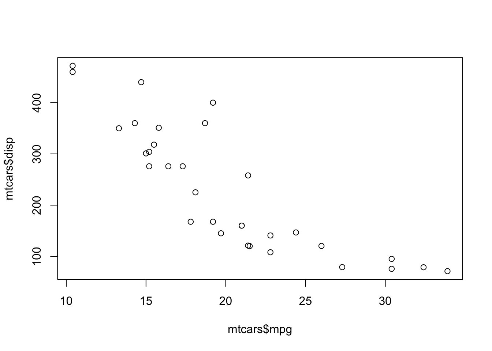
If I want to create a similar visualization in ggplot2, I would start with the data and the aesthetics (aes) using the ggplot function.
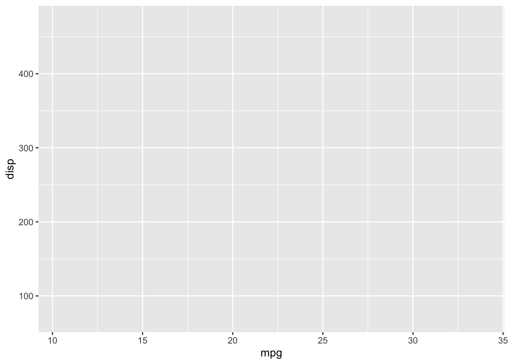
You’ll notice that there aren’t any points in our graph. That is because we have yet to create a layer to render the observations. Recall that we typically use a geom function for this. Scatterplots are rendered using geom_point.
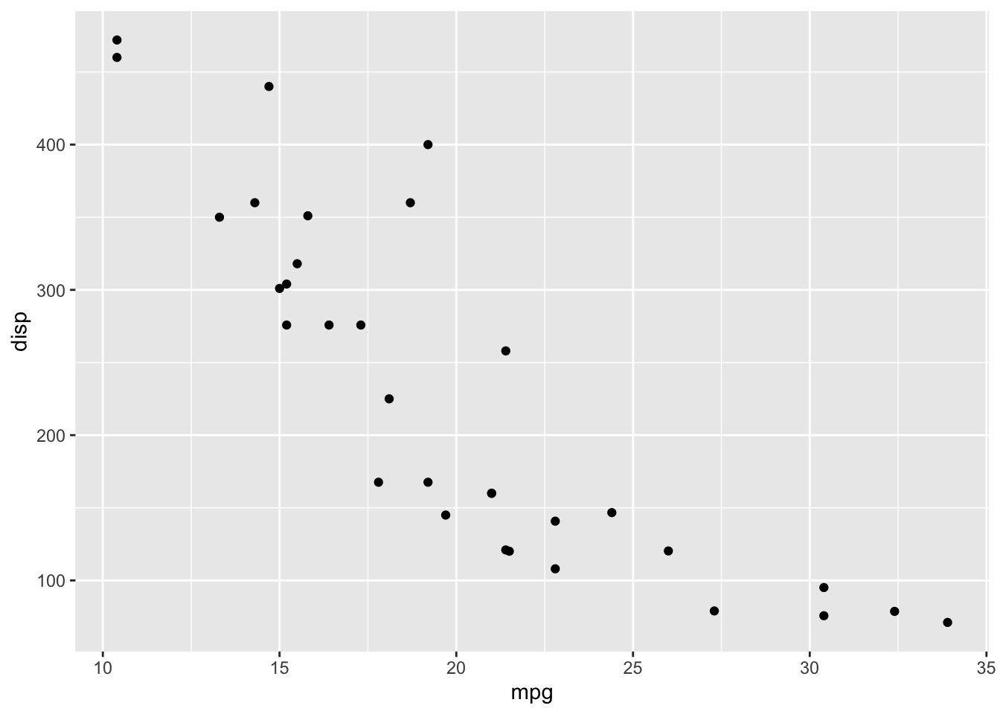
Looking back at the layered grammar we created:
- data -
mtcars - aesthetics - we map
mpgto the x-axis anddispto the y-axis - layer - we use points as the geometric object to render the values
You’ll probably notice that the visualization is a little more refined than the one we created with plot. One of the benefits of using ggplot2 is that the defaults are really good.
We can also apply other aesthetic mappings to our visualization, like mapping cylinder to color:
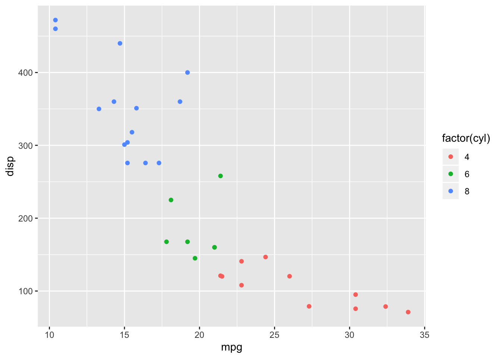
I used factor to effectively treat displacement as a factor (i.e., enumerated or categorical) variable. This creates a potentially more diverging color scheme and prevents a legend that might include values that don’t exist in the data (shown below without the use of factor).

Some other aesthetic mappings include size:
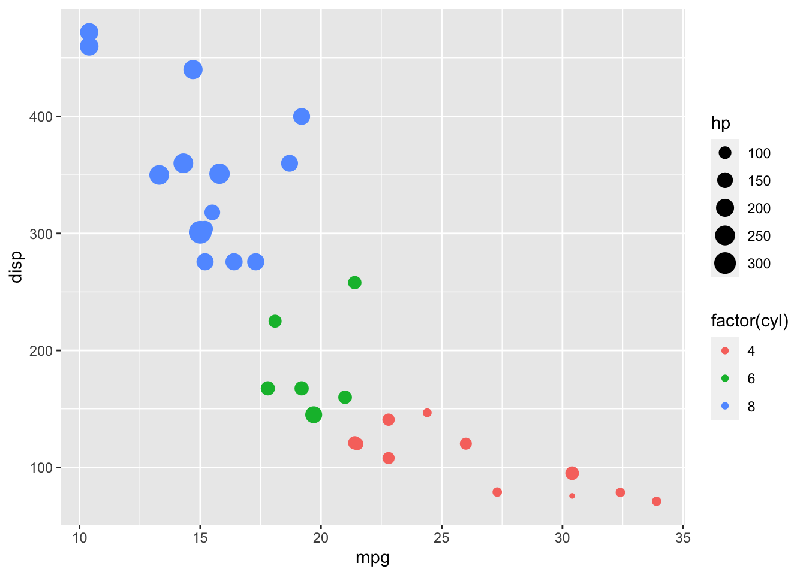
…and shape:
ggplot(data = mtcars, aes(x = mpg, y = disp, color = factor(cyl), size = hp, shape = factor(gear))) +
geom_point()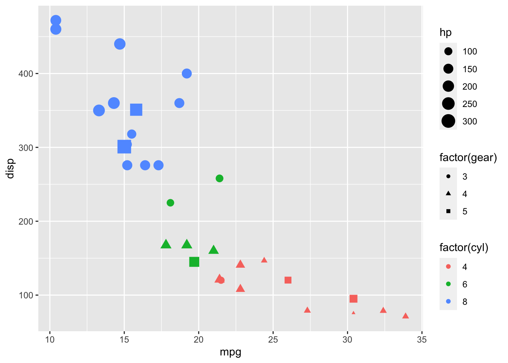
The aesthetics we use are somewhat dependent on how we choose to encode our data. Some aesthetics not used or not applicable here are fill, linetype, weight, alpha, and text. The visualization above is somewhat difficult to comprehend, and we might be better off rethinking what data we want to show and how we want to communicate it.
There are also a variety of geoms for bars, boxplots, smoothing lines, and others that you can use, some of which we will cover thoughout the semester.
The remaining grammatical elements that we have yet to cover, are:
- The
scales map values in the data space to values in an aesthetic space, whether it be color, or size, or shape. Scales draw a legend or axes, which provide an inverse mapping to make it possible to read the original data values from the plot. - A coordinate system,
coordfor short, describes how data coordinates are mapped to the plane of the graphic. It also provides axes and gridlines to make it possible to read the graph. We normally use a Cartesian coordinate system, but some others are available, including polar coordinates and map projections. - A
faceting specification describes how to break up the data into subsets and how to display those subsets as small multiples. This is also known as conditioning or latticing/trellising. - A
themewhich controls the finer points of display, like the font size and background colour. While the defaults in ggplot2 have been chosen with care, you may need to consult other references to create an attractive plot. A good starting place is Edward Tufte’s early works (Tufte, 1990, 1997, 2001).
3.6 dplyr window functions
As defined in the dplyr documentation, a window function is a variation on an aggregation function. Where an aggregation function, like sum() and mean(), takes n inputs and return a single value, a window function returns n values.
The window functions we’ll be dealing with in this class are often ranking functions (like min_rank()) and offset functions (like lag() which was introduced in the last unit). If you have ever worked with relational databases, window functions are commonly implemented in SQL.
The ranking and ordering functions you may use in dplyr are:
row_number()min_rank()which allows for gaps in ranks (e.g., if two rows are tied for first, the next rank is third)dense_rank()which doesn’t allow for gaps in ranks (e.g., if two rows are tied for first, the next rank is second)percent_rank()a number between 0 and 1 computed by rescaling min_rank to [0, 1].cume_dist()a cumulative distribution function. Proportion of all values less than or equal to the current rank.ntile()a rough rank, which breaks the input vector into n buckets
If you look at a ranking of gpa’s in the got data, 3.23 is tied for fourth place, and 2.84, which is the 6th row in the arranged data frame would be in sixth place using min_rank(), fifth place, using dense_rank()
got <- read.csv(url("http://jamessuleiman.com/teaching/datasets/got.csv"),
stringsAsFactors = FALSE)
got %>% filter(row_number(desc(gpa)) == 6)## lastname firstname major year gpa
## 1 Baelish Peter Communications Freshman 2.84## lastname firstname major year gpa
## 1 Baelish Peter Communications Freshman 2.84## lastname firstname major year gpa
## 1 Baelish Peter Communications Freshman 2.84We could also use the slice verb to accomplish the same thing.
## lastname firstname major year gpa
## 1 Baelish Peter Communications Freshman 2.84We’ll add the columns p_rank, c_dist and ntile to show you how the remaining ranking functions work. We’ll use four buckets for ntile()
got %>% select(lastname, firstname, gpa) %>% arrange(desc(gpa)) %>%
mutate(p_rank = percent_rank(gpa), cdist = cume_dist(gpa),
ntile = ntile(gpa, 4))## lastname firstname gpa p_rank cdist ntile
## 1 Lannister Tyrion 3.83 1.0000000 1.0 4
## 2 Drogo Khal 3.38 0.8888889 0.9 4
## 3 Targaryen Daenerys 3.36 0.7777778 0.8 3
## 4 Snow John 3.23 0.5555556 0.7 3
## 5 Clegane Gregor 3.23 0.5555556 0.7 3
## 6 Baelish Peter 2.84 0.4444444 0.5 2
## 7 Stark Eddard 2.78 0.3333333 0.4 2
## 8 Tarly Samwise 2.39 0.2222222 0.3 1
## 9 Bolton Ramsay 2.24 0.1111111 0.2 1
## 10 Baratheon Joffrey 1.87 0.0000000 0.1 1The offset functions you may use in dplyr are:
lag()returns the previous value in the vector - introduced in the last unit.lead()returns the next value in a vector - the opposite oflag()
If we wanted to know the gpa of the next better lag() and next worst lead() students I would use:
## lastname firstname major year gpa nxt_better nxt_worst
## 1 Lannister Tyrion Communications Sophomore 3.83 NA 3.38
## 2 Drogo Khal Zoology Senior 3.38 3.83 3.36
## 3 Targaryen Daenerys Zoology Freshman 3.36 3.38 3.23
## 4 Snow John Nordic Studies Junior 3.23 3.36 3.23
## 5 Clegane Gregor Phys Ed Sophomore 3.23 3.23 2.84
## 6 Baelish Peter Communications Freshman 2.84 3.23 2.78
## 7 Stark Eddard History Senior 2.78 2.84 2.39
## 8 Tarly Samwise Nordic Studies Freshman 2.39 2.78 2.24
## 9 Bolton Ramsay Phys Ed Freshman 2.24 2.39 1.87
## 10 Baratheon Joffrey History Freshman 1.87 2.24 NAWe’ve covered a good portion of dplyr and most of what you’ll be using for the remainder of the semester.
3.7 Perception
Colin Ware, a professor at UNH, covers perception in great detail – in both of his books. It is relatively easy to follow visual design heuristics like “use high contrast,” and learning some rules and guidelines for constructing visualizations will go a long way to improve your skills at creating good visualizations. Understanding human visual perception takes a great deal more work but will also enhance your ability to ascertain a certain level of mastery in creating visualizations. With regards to high contrast, if we see the image below, the lion’s sand color is not in high contrast to the greenish hues of the tall grasses, yet we can spot the lion quite easily. We are genetically hardwired to see the lion as our genetic ancestry mostly doesn’t include people that could not see the lion - they were eaten.
Creative Commons licensed, Flickr user Heather Bradley
Before we get too far into why we so readily see the lion and how that relates to creating good visualizations, it is essential to understand that some graphics are well understood because they are part of our visual language and are more similar to words on a page. A graphic like the one shown below would be an excellent example of this. I’ve removed the legend. Take a second and see if you can guess what this graphic is showing?
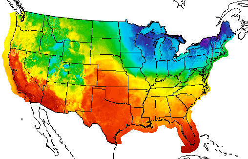 NOAA Weather Map
If you guessed that this is a temperature map for the United States, you would be correct. The reason you were able to guess what the map was is that you have seen it before. It is part of your learned language. If graphical perception was purely based on learned graphical conventions, understanding human visual perception would not be necessary in creating visualizations. One would merely spend time learning the conventions. Conventions are relevant, however observing the lion in the tall grass isn’t part of a learned language - it is sensory.
As shown in the neuroscience video with Scott Murray, explaining visual perception to the layperson, with no background in neuroscience, is difficult. Here are the simplified steps he describes in the video:
- Light enters our eye.
- Gets transduced (i.e., converted from light signals to neural signals) by our retina into visual information.
- Visual information travels to the cortex.
- Stops in the lateral geniculate nucleus in the thalamus.
- Projects directly to the cortex in an area called V1 or primary visual cortex.
- V1 to other cortical regions (e.g., V2, V3, parietal cortex, temporal lobe, etc.).
- There are upwards of 30 different visual areas in the brain.
- Perception is a complex interaction that isn’t fully understood. It also depends on what we are processing. For example, motion is processed differently than color.
Sounds simple, right? Visual perception is an attempt by our brains to figure out what caused a pattern on our retina. In that process, the brain tries to prioritize what it thinks is important (e.g., the lion in the grass). This importance filtering is referred to as pre-attention. Look at the pattern below. Can you count how many times the number 5 appears in the list?
13029302938203928302938203858293
10293820938205929382092305029309
39283029209502930293920359203920
You had to attentively process the entire list to count the number of 5’s. This probably took quite a bit of time. Try counting again using the list below.
13029302938203928302938203858293
10293820938205929382092305029309
39283029209502930293920359203920
That was quite a bit easier and illustrative of preattentive processing. We told your brain what was important by using shading or color intensity. Many visual features have been identified as preattentive. Christopher G. Healy summarizes them very well in the table below copied from his site on perception in visualization. On Healy’s table, he also lists the citations for the psychology studies that examined each visual feature.
 line (blob) orientation line (blob) orientation |
 length, width length, width |
 closure closure |
 size size |
 curvature curvature |
 density, contrast density, contrast |
 number, estimation number, estimation |
 colour (hue) colour (hue) |
 intensity, binocular lustre intensity, binocular lustre |
 intersection intersection |
 terminators terminators |
 3D depth cues, stereoscopic depth 3D depth cues, stereoscopic depth |
 flicker flicker |
 direction of motion direction of motion |
 velocity of motion velocity of motion |
 lighting direction |
 3D orientation |
 artistic properties |
||
|
Table 1: A partial list of preattentive visual features. |
|||
So how does this explain our rapid identification of the lion in the tall grass? The explanation is probably quite a bit more complicated than the observable pattern shifts between the lion and her surroundings. As humans, we probably tend first to look where things might be hiding. Nonetheless, the volumes of human visual perception research help us provide some guidelines and considerations when preparing graphics.
My favorite synthesis of best uses of visual encodings is this chart, compiled by Noah Iliinksy. He gives simple guidelines for selecting visual encodings depending on the type of data you have (i.e., quantitative, ordinal, categorical, relational). Don’t think of this as hard rules. It is more like suggested guidance in selecting visual encodings. For example, NOAA does use color to represent quantitative data (temperature) even though it is not recommended. Since the use of color in weather maps is so familiar, it has become part of our visual vocabulary and is not only considered acceptable but preferred.
3.8 Planning a Visualization
Generally speaking, the starting point for planning a visualization is looking at the data. We typically want to get the data in a tidy format first. We’ll use a local dataset from data.maine.gov – Maine population by county (per decade, 1960-2010). We’ll assume I don’t have a specific question that I’m trying to answer; I want to see what might be interesting. These could include:
- counties with abnormal growth rates (high or low)
- shifts in population over time
- etc.
I’ve already downloaded and cleaned up the data to save you the trouble of going to data.maine.gov and downloading and tidying the original data.
county_pop <- read.csv(url("http://jamessuleiman.com/teaching/datasets/maine_county_population.csv"),
stringsAsFactors = FALSE)
str(county_pop)## 'data.frame': 96 obs. of 3 variables:
## $ county : chr "Androscoggin" "Aroostook" "Cumberland" "Franklin" ...
## $ year : int 1960 1960 1960 1960 1960 1960 1960 1960 1960 1960 ...
## $ population: int 86312 106064 182751 20069 32293 89150 28575 18497 44345 126346 ...I want to quickly see if there is a growth rate story to be told, so I’ll use ggplot2 to make small multiples for exploratory visualization. I’ll be doing one chart for each county using facets, which have their specification in the layered grammar. We’ll cover facets in more detail later in the semester. I’ll do a county by county comparison, so my aesthetics will be:
- x = year
- y = population
Because I’m interested in the growth rate, I’ll use geom_line and geom_point.
ggplot(county_pop, aes(x = year, y = population)) +
geom_line() +
geom_point() +
facet_wrap(~ county)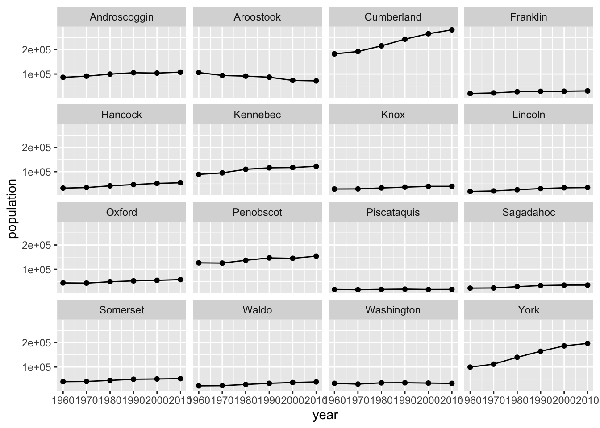
It looks like Southern Maine grew, while Northern Maine did not. That would be a compelling story to tell on a map, but for this example, since I’m not using a map I’m going to compare the two most southeastern counties (York and Cumberland) to the two most northeastern counties. I’ll still use the same aesthetics and geoms, but I’ll change county from a facet to an aesthetic – color.
ggplot(county_pop %>%
filter(county %in% c("Aroostook", "Washington", "York", "Cumberland")),
aes(x = year, y = population, col = county)) +
geom_line() +
geom_point()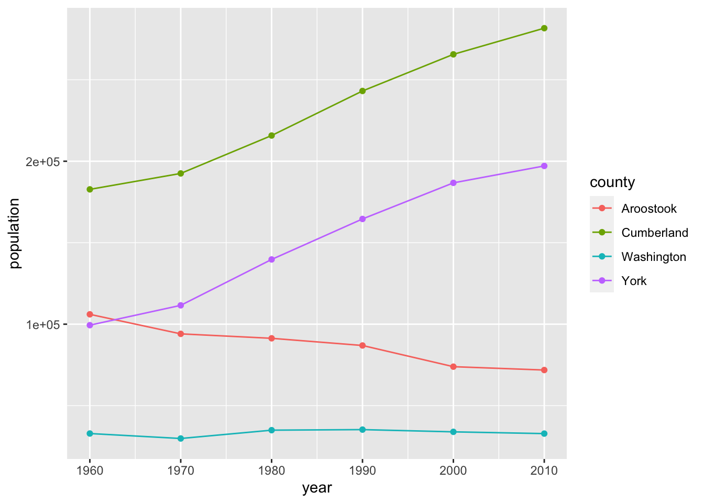
Finally, we’ll change the breaks on the y-axis to increments of 50,000 and use a red-green colorblind friendly palette. We’ll use the simple scale_color_colorblind() function from package ggthemes. You’ll notice that the color differences aren’t as easy to notice as the default ggplot2 palette. If we wanted more control or options over our colorblind palette, we could use the dichromat package or the colorblind friendly palettes from colorbrewer.org. Keep in mind that there are also computer tools for colorblind users that automatically transform colors on websites.
library(ggthemes)
ggplot(county_pop %>%
filter(county %in% c("Aroostook", "Washington", "York", "Cumberland")),
aes(x = year, y = population, col = county)) +
geom_line() +
geom_point() +
scale_y_continuous(breaks = c(50000, 100000, 150000, 200000, 250000)) +
scale_color_colorblind()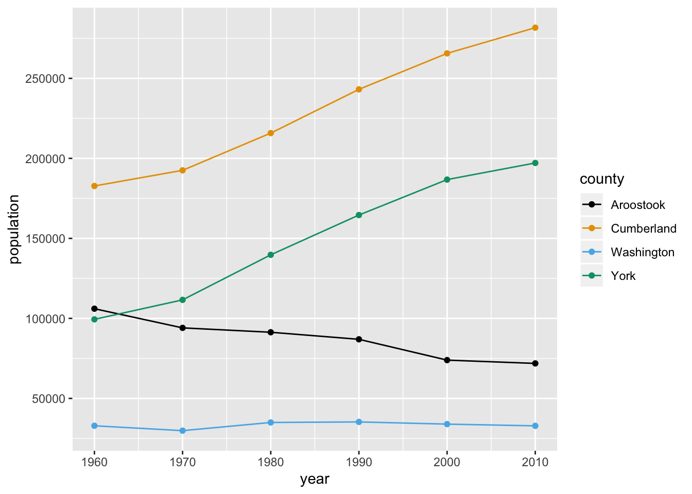
3.9 DataCamp Exercises
The DataCamp exercises due this unit continue coverage of dplyr and ggplot2. These exercises will complete the DataCamp “Introduction to the Tidyverse” course. DataCamp also provides certificates for these courses and the ability to share your completion on LinkedIn, which is always a good resume-booster.
3.10 Credits
Lion photo, HeatherBradleyPhotography Some rights reserved
(used with author permission)A partial list of preattentive visual features, Christopher G. Healy
Properties and Best Uses of Visual Encodings, Noah Iliinsky Some rights reserved
Color Blind Essentials, by Colblindor
3.11 DataCamp Exercises
The DataCamp exercises you are assigned primarily cover dplyr and ggplot2 in different ways. This breadth of coverage should help solidify your knowledge of these core packages which we’ll use throughout the semester. Both of these packages will also help clarify your thinking when manipulating data and visualizing it. This will make it easier to work with any data manipulation and visualization tools, including Excel.